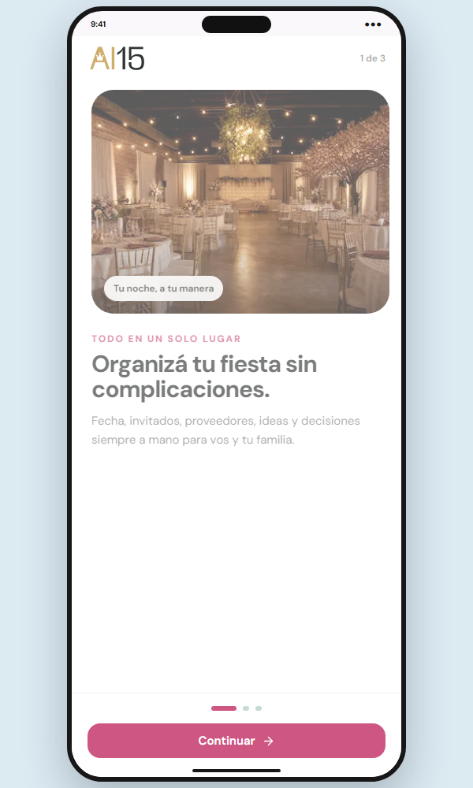
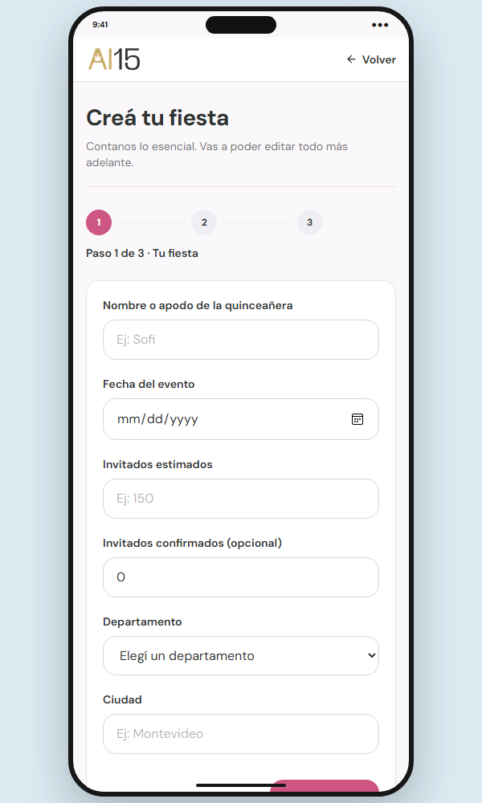
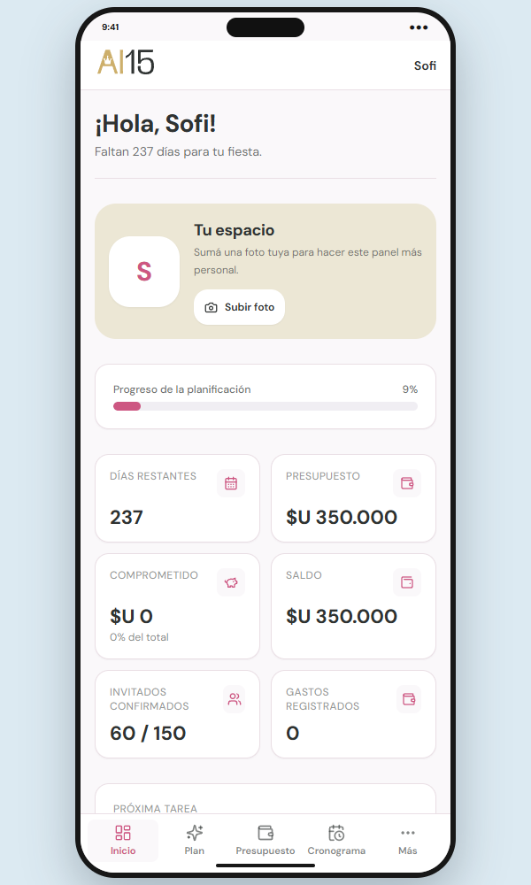
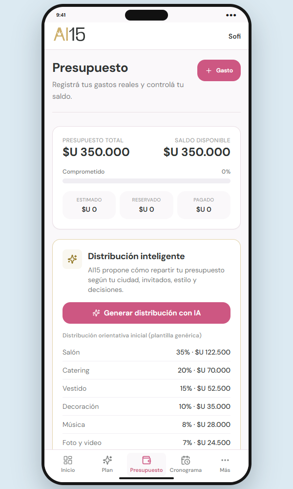
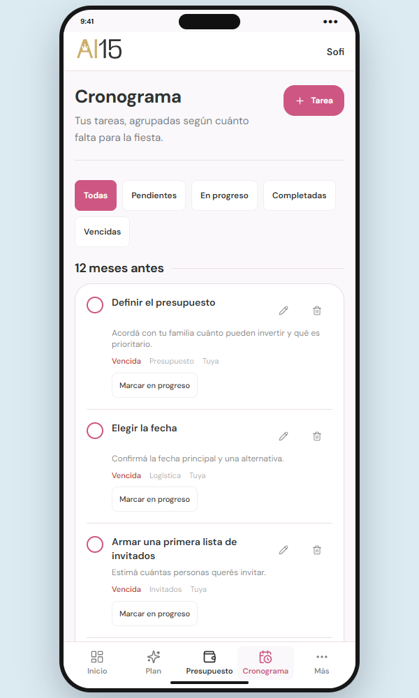

Documentación integral de AI15, una beta mobile para organizar fiestas de quince con presupuesto, cronograma y asistencia personalizada mediante IA.
AI15 centraliza la planificación de una fiesta de quince y transforma datos reales de la usuaria en una guía accionable, coherente y adaptada a su fecha y presupuesto.
Reducir desorden y ansiedad al convertir información dispersa en decisiones, prioridades y próximos pasos visibles.
Especialización en fiestas de quince uruguayas, tono rioplatense y recomendaciones que respetan decisiones ya confirmadas.
Una fiesta de quince combina presupuesto familiar, fechas, invitados, proveedores y una gran cantidad de decisiones estéticas. En la práctica, esa información suele distribuirse entre chats, notas, planillas, capturas de pantalla y perfiles de redes sociales.
Datos y acuerdos en múltiples canales, difíciles de consultar en conjunto.
Dificultad para asignar dinero y entender cuánto queda disponible.
No siempre está claro qué debería resolverse 12, 6 o 1 mes antes.
Vestido, salón, decoración e invitaciones necesitan coherencia.
Usuario principal: adolescentes de 14–15 años en Uruguay que organizan su fiesta desde el celular y valoran una experiencia visual, simple y personal.
Usuario secundario: familiares adultos que participan en presupuesto, contrataciones y confirmaciones.
Claridad, orden, orientación y control compartido.
Estética, personalización, inspiración y herramientas móviles.
Consulta desde el teléfono, guarda referencias y decide en familia.
Dar una visión única y comprensible de la fiesta, y usar IA únicamente donde aporta una síntesis que sería difícil construir manualmente.
Usa el celular como dispositivo principal, sigue cuentas de inspiración y quiere una fiesta elegante con detalles románticos. Su madre acompaña la planificación y controla el presupuesto.
| Momento | Necesidad | Respuesta de AI15 | Emoción buscada |
|---|---|---|---|
| Descubrimiento | Entender para qué sirve. | Onboarding en tres ideas simples. | “Esto me puede ayudar”. |
| Configuración | Contar lo esencial sin cansarse. | Formulario progresivo de tres pasos. | Control. |
| Planificación | Ver estado, saldo y próximos pasos. | Dashboard y módulos enfocados. | Calma. |
| Orientación | Transformar datos en un plan. | IA con contexto y resultados estructurados. | Confianza. |
| Seguimiento | Actualizar decisiones reales. | Gastos, tareas, confirmaciones y alertas. | Avance. |
Español rioplatense, cercano y directo, sin infantilizar.
Controles táctiles, bloques breves y navegación inferior.
Priorizar una decisión por vez y mostrar progreso real.
Diferenciar datos propios, ejemplos e información generada por IA.
La persona es una construcción de diseño basada en el público definido; no representa una entrevista real. Se documenta así para no presentar investigación inexistente.
Se realizó una exploración comparativa de categorías de herramientas que hoy suelen resolver partes aisladas del problema. El objetivo no fue copiar una interfaz, sino detectar oportunidades de integración.
| Alternativa | Fortaleza | Limitación para este caso | Oportunidad AI15 |
|---|---|---|---|
| Pinterest / Instagram | Gran volumen de inspiración visual. | No convierte ideas en presupuesto, tareas o decisiones. | Relacionar inspiración descripta con el plan. |
| Planillas | Flexibilidad y cálculo. | Requieren estructura manual y son poco amigables para adolescentes. | Presupuesto guiado y lectura inmediata. |
| Trello / Notion | Organización y colaboración general. | No conocen hitos ni lenguaje de una fiesta de quince. | Cronograma especializado según la fecha. |
| Apps de bodas/eventos | Checklists y proveedores. | Foco cultural y experiencia distintos; recomendaciones genéricas. | Contexto uruguayo, UYU/USD y tono local. |
| Chatbots generales | Respuestas flexibles. | No conservan necesariamente las restricciones del proyecto ni garantizan formato. | Contexto curado, JSON validado y decisiones confirmadas. |
El valor aparece cuando una idea impacta en una decisión, una categoría del presupuesto o una tarea.
La IA debe respetar presupuesto y decisiones confirmadas, no inventar negocios ni disponibilidad.
Se calcula con gastos, tareas, decisiones, proveedores e invitados reales, no con un porcentaje decorativo.
Los textos y datos deben ser comprensibles para la adolescente y para quien administra el dinero.
Fecha, invitados, proveedores, ideas y decisiones siempre a mano.
Visualizá gastos, saldo y distribución del presupuesto por categoría.
Recibí prioridades y recomendaciones adaptadas a tu fiesta.
Mobile siempreUna acción principalDatos honestosIA explicableTono cercano
El catálogo de ejemplos se identifica como ficticio; las imágenes de inspiración permanecen locales; las acciones de IA explican qué datos serán enviados antes de generar.
La modalidad elegida es la Opción 1. La nueva versión no se limita a corregir la interfaz: reorganiza el flujo, amplía las prestaciones e integra IA real evaluable.
| Dimensión | Versión inicial | Beta actual |
|---|---|---|
| Inicio | Landing con dos CTA inmediatos. | Onboarding progresivo; los CTA aparecen al final. |
| Diseño | Composición más cercana a una web genérica. | Marco de teléfono, navegación inferior y componentes táctiles. |
| Identidad | Isotipo genérico. | Logo oficial SVG, paleta definida y dirección editorial minimalista. |
| Datos | Métricas y estados principalmente demostrativos. | Gastos, tareas, decisiones, invitados y progreso derivados del store. |
| Cronograma | Lista breve con fechas exactas. | 29 tareas agrupadas por períodos relativos y recalculables. |
| IA | Infraestructura prevista. | Dos endpoints funcionales con Gemini, salidas estructuradas y memoria de sesión. |
| Seguridad | Cliente servidor preparado. | Clave server-only, timeout, límites, validación y errores controlados. |
Se incorporó una explicación gradual de funciones y beneficio antes de crear el evento.
El dashboard permite sumar una foto propia y presenta la fiesta como un espacio personal.
Se agregó una lista deliberadamente simple: nombre, confirmación y eliminación.
Ambos responden al trabajo registrado; no se muestra un avance predeterminado.
Los hitos responden a la fecha del evento y se agrupan por momentos comprensibles.
Inicio · Plan · Presupuesto · Cronograma · Más
Mantiene visibles los destinos más frecuentes y una quinta entrada para evitar saturación.
Invitados · Proveedores · Inspiración · Decisiones · Cuenta
Agrupa funciones secundarias sin perder acceso táctil.
Guía para comenzar.
Feedback durante IA.
Mensaje y reintento.
Aviso cuando cambian datos.
La IA forma parte de la experiencia evaluable: la usuaria genera resultados desde la aplicación y puede conservarlos, revisarlos e incorporar sus tareas.
Produce resumen, presupuesto, cronograma priorizado, propuesta estética, recomendaciones y advertencias.
POST /api/ai/planPropone porcentajes y justificaciones por categoría, adaptados a presupuesto, gastos y contexto.
POST /api/ai/budget| Servicio | Proxy estudiantil de Gemini / Google Vertex. |
| Modelo | gemini-2.5-flash. |
| Ubicación | Rutas de servidor de Next.js; no se llama al modelo desde el navegador. |
| Formato | JSON estructurado mediante responseSchema y segunda validación con Zod. |
| Persistencia | El resultado válido se guarda en el store local y queda marcado si cambia el contexto. |
La planificación requiere combinar muchas variables y mantener coherencia entre presupuesto, tiempo, estética y decisiones. Una plantilla fija puede cubrir hitos básicos; la IA aporta priorización y síntesis contextual. Los cálculos críticos y la validación permanecen en código determinista.
Se seleccionan solo los campos necesarios del evento, gastos, tareas, decisiones, proveedores elegidos y descripciones de inspiración.
La ruta valida el body con Zod y rechaza solicitudes incompletas o sin presupuesto.
Se combinan reglas del sistema, contexto y tarea. Gemini recibe un esquema JSON obligatorio.
La llamada se ejecuta únicamente en servidor con Authorization Bearer, timeout y límite de tamaño.
La respuesta se parsea, valida de nuevo y la distribución se ajusta para sumar 100%.
El resultado se muestra en componentes del producto y se conserva durante la sesión junto con una huella del contexto.
FechaUbicaciónInvitadosPresupuestoEstilosColoresGastosDecisionesProveedores seleccionadosDescripciones
Resumen, cronograma, estética y recomendaciones.
Categoría, porcentaje y justificación.
Riesgos, incertidumbre o información faltante.
| Límite de prompt | 16.000 caracteres | Control de costo y abuso. |
| Timeout | 45 segundos | Evita esperas indefinidas. |
| Salida máxima | 4.096 tokens | Respuesta acotada. |
| Temperatura | 0,5 presupuesto / 0,6 plan | Equilibrio entre consistencia y variedad. |
.env.local, ignorada por Git.NEXT_PUBLIC_.server-only.| Riesgo | Mitigación actual | Responsabilidad de la usuaria |
|---|---|---|
| Recomendación poco realista. | Reglas de presupuesto, contexto y warnings. | Revisar antes de contratar o comprar. |
| Porcentajes que no suman 100. | Normalización determinista posterior. | Comparar con gastos reales. |
| Fecha incoherente. | Formato estructurado y validación. | Confirmar plazos con proveedores. |
| Contradicción estética. | Decisiones confirmadas como restricciones. | Marcar decisiones importantes. |
| Servicio no disponible. | Timeout, estado de error y reintento. | Volver a intentar más tarde. |
No hay autenticación ni sincronización. Al recargar se restaura el perfil demo original.
Los ejemplos son ficticios y están etiquetados. La usuaria puede cargar proveedores reales propios.
No se realiza análisis visual con IA; se usan descripciones escritas para mantener privacidad y alcance.
AI15 orienta, pero no reemplaza contratos, presupuestos formales ni asesoramiento profesional.
La marca busca elegancia, organización y sofisticación sin recurrir a una estética tecnológica o excesivamente “generada por IA”.
Archivo vectorial oficial, utilizado de forma consistente en onboarding, encabezados y formularios.
DM Sans
Familia sans serif legible en pantallas pequeñas, con títulos compactos y cuerpo de lectura simple.
| Es | No es | Ejemplo |
|---|---|---|
| Cercano | Infantil | “Organizá tu fiesta sin complicaciones.” |
| Claro | Técnico | “Faltan 237 días para tu fiesta.” |
| Elegante | Recargado | Frases breves y colores suaves. |
| Honesto | Promocional en exceso | “Ejemplos para inspirarte. No son negocios reales.” |
Naming: “AI15” conecta inteligencia artificial con el rito central del producto. Storytelling: no se trata de planificar una fiesta perfecta, sino de convertir decisiones compartidas en una noche propia, clara y posible.


“Crear mi fiesta” y “Ver demo” se muestran solo al terminar el onboarding, después de explicar organización, presupuesto y plan personalizado.
Áreas táctiles amplias, jerarquía tipográfica visible, progreso del formulario y retorno claro.


Se deriva de gastos, plan, decisiones, proveedores, inspiraciones, invitados y tareas completadas.
La app diferencia gastos registrados de la propuesta porcentual generada por IA.

Presupuesto, fecha, primera lista, tema y reserva del salón.
Fotografía, video, música, catering, decoración y vestido.
Acompañantes, accesorios, invitaciones y ensayos.
Menú, pruebas, belleza y confirmación de proveedores.
Canciones, cronograma, mesas, RSVP, pagos, vestido, peinado y maquillaje.
Lograr que quinceañeras y familias reconozcan el desorden de planificar como un problema resoluble y prueben la demo.
“Tu fiesta, organizada con claridad.”
Una herramienta que acompaña decisiones sin quitar protagonismo.
AI15 se presenta como una compañera de planificación especializada, no como una organizadora que decide por la usuaria ni como un software empresarial.
| Etapa | Objetivo | Canal / pieza | CTA | Métrica |
|---|---|---|---|---|
| Descubrimiento | Instalar el problema. | Reel + publicación. | Conocé AI15. | Alcance y reproducciones. |
| Interés | Mostrar utilidad. | Carrusel de funciones. | Probá la demo. | Clics al producto. |
| Activación | Crear una fiesta. | Onboarding + demo. | Crear mi fiesta. | Eventos creados. |
| Retención | Volver a planificar. | Email recordatorio futuro. | Ver próximos pasos. | Retorno semanal. |
Checklists, plazos y pequeñas decisiones accionables.
Consejos para conversar prioridades en familia.
Ideas para que la fiesta represente a la quinceañera.
InstagramTikTok / ReelsLanding mobileEmail de acompañamiento
La selección responde al uso cotidiano del celular y a la naturaleza visual de la categoría. El contenido lleva a una prueba concreta, no solo a reconocimiento de marca.
Presupuesto, invitados, ideas y próximos pasos en un solo lugar.
Hola, Sofi:
Tu fiesta ya tiene una base. Entrá a AI15 para revisar el próximo paso, actualizar tus confirmaciones y ver cómo viene el presupuesto.
Ver mi planificaciónEstas piezas son propuestas conceptuales de campaña maquetadas para la entrega. La dirección creativa reutiliza identidad, tono y propuesta de valor del producto.
Historias con pain points y encuesta sobre presupuesto/organización.
Reel corto mostrando onboarding, dashboard y generación de presupuesto.
Invitación a un grupo reducido de quinceañeras y familiares para probar tareas concretas.
Revisión de fricciones, lenguaje, errores de IA y retorno al producto.
| Dato | Uso | Cuidado |
|---|---|---|
| Enviar acceso y recordatorio. | Consentimiento y opción de baja. | |
| Departamento | Entender cobertura geográfica. | No requiere ubicación exacta. |
| Fecha estimada | Segmentar contenido por etapa. | Evitar compartirla públicamente. |
| Origen | Medir campaña. | UTM sin identificación sensible. |
CTR a demoEventos creadosPlanes generadosRetorno semanalErrores de IA
Gemini 2.5 Flash: recibe contexto acotado y genera el plan y la distribución presupuestal. El estudiante define reglas, esquema, validación y presentación.
| Herramienta | Contexto | Curaduría realizada |
|---|---|---|
| ChatGPT / Codex | Ideación, estructura, asistencia de código y documentación. | Revisión del repositorio, ajuste de alcance, validación de build y descarte de afirmaciones no comprobables. |
| Generación de imagen de OpenAI | Fotografía ambiental del salón para onboarding. | Selección de una imagen coherente, uso no testimonial y recorte mobile. |
| Gemini | Feature evaluable dentro de AI15. | Prompt especializado, restricciones, JSON Schema, Zod y normalización. |
ROL: organizadora de fiestas de 15 de AI15. TONO: español rioplatense, cercano, claro y elegante. REGLAS: no inventar proveedores ni precios; no superar presupuesto; respetar decisiones confirmadas; priorizar por tiempo restante; mantener coherencia estética; devolver solo JSON válido. CONTEXTO: evento + gastos + decisiones + proveedores elegidos + descripciones de inspiración. TAREA: generar resumen, presupuesto, cronograma, propuesta estética, recomendaciones y advertencias.
Node.js 18.18 o superior (recomendado 20/22), npm 9 o superior y una API key válida del proxy estudiantil para probar generación.
npm install copy .env.example .env.local # completar GEMINI_PROXY_API_KEY sin prefijo NEXT_PUBLIC_ npm run dev # abrir http://localhost:3000
| Variable | Función | Exposición |
|---|---|---|
GEMINI_PROXY_API_KEY | Autentica contra el proxy. | Solo servidor; no incluir en la entrega pública. |
GEMINI_PROXY_BASE_URL | URL base del servicio. | Configuración de servidor. |
GEMINI_TEXT_MODEL | Modelo por defecto. | Configuración de servidor. |
No hay login. La demo funciona sin cuenta. La generación requiere la key entregada por el docente.
“Sofi”, Montevideo, 150 invitados, presupuesto UYU 350.000 y fecha dinámica futura.
Next.js 14TypeScript estrictoReact 18Tailwind CSSZustandReact Hook FormZodLucide
Un store central en memoria, inicializado con un usuario fijo y datos reproducibles.
Rutas dinámicas para IA y módulo server-only para proteger credenciales.
App Router, componentes reutilizables y marco mobile consistente.
Tipos separados para evento, gastos, tareas, invitados, decisiones, inspiración y proveedores.
Se ejecutó npm run build el 21/07/2026. La compilación, lint y chequeo de tipos finalizaron correctamente. Las capturas de este documento se generaron desde la build ejecutándose localmente.
| Situación | Decisión tomada | Aprendizaje |
|---|---|---|
| La IA puede devolver formatos variables. | JSON Schema + Zod + normalización. | Una feature de IA necesita código de contención. |
| El progreso podía parecer arbitrario. | Derivarlo de acciones reales. | La confianza depende de trazabilidad. |
| El cronograma exacto era difícil de leer. | Agrupar por períodos relativos. | La información debe coincidir con el modelo mental. |
| No existe fuente real de proveedores. | Marcar ejemplos y permitir carga propia. | Es preferible declarar una limitación a inventar datos. |
Cuentas y nube. Autenticación, base de datos y colaboración familiar entre dispositivos.
Proveedores reales. Fuente verificada, fotos con permiso, cobertura y precios actualizados.
Validación con usuarios. Pruebas moderadas con quinceañeras y familiares.
Automatización. Captación, onboarding por email y recordatorios consentidos.
Código fuente completo · README e instrucciones · .env.example · datos demo · logo SVG · capturas de evidencia · documentación técnica en docs/.